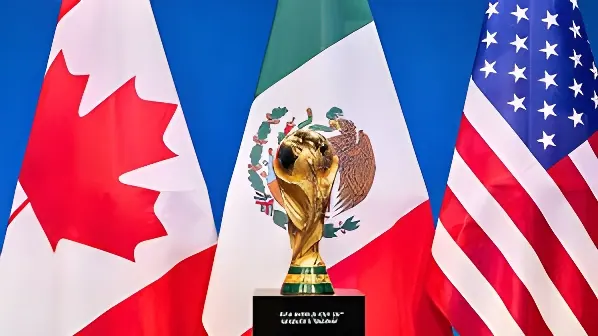

Organisée conjointement par les États-Unis, le Canada et le Mexique, la Coupe du Monde de football 2026 constitue pour ce dernier bien plus qu'un événement sportif. Dans un contexte marqué par la mort controversée d'El Mencho, chef du cartel CJNG, et par une violence endémique qui touche les États hôtes, le tournoi est devenu un révélateur des tensions profondes qui traversent la société mexicaine.
Pour la première fois de son histoire, la Coupe du Monde de la FIFA réunit trois nations co-organisatrices. Si les États-Unis accueillent la majorité des matchs (60 rencontres dans 11 stades), le Mexique tient un rôle symbolique fort : il organise trois matchs d'ouverture dans ses stades iconiques, dont le légendaire Estadio Azteca de Mexico, qui devient ainsi le premier stade à accueillir trois Coupes du Monde (1970, 1986, 2026). Guadalajara et Monterrey complètent le dispositif mexicain.
La mort de Nemesio Oseguera Cervantes, alias « El Mencho », chef du Cartel Jalisco Nueva Generación (CJNG), annoncée début 2026 par les autorités mexicaines, a été présentée par la présidente Claudia Sheinbaum comme un signal fort à quelques mois du coup d'envoi. Le CJNG était considéré comme le cartel le plus violent et le plus expansif du pays, présent dans plus de 26 des 32 États mexicains.
Cependant, les experts en sécurité tempèrent cet optimisme affiché. L'histoire des cartels mexicains montre qu'éliminer un chef ne démantèle pas l'organisation : après la capture d'El Chapo en 2016, le Cartel de Sinaloa s'est fragmenté mais a maintenu sa puissance. La disparition d'El Mencho risque de provoquer une guerre de succession au sein du CJNG et d'intensifier les affrontements avec le Cartel de Sinaloa pour le contrôle des corridors du trafic de drogue — notamment dans l'État de Jalisco, dont Guadalajara est la capitale et ville hôte de la Coupe du Monde.
Claudia Sheinbaum remporte l'élection présidentielle avec 59 % des voix. Elle hérite d'un Mexique où 33 000 homicides annuels ont été enregistrés sous AMLO. Promesse de « sécurité sans guerre ».
La FIFA et le Comité d'organisation publient le plan de sécurité conjoint pour les trois pays hôtes. Pour le Mexique, déploiement prévu de 15 000 membres de la Garde nationale dans les trois villes hôtes.
Annonce officielle de la mort d'El Mencho. Le gouvernement mexicain parle de « tournant décisif ». Première série d'affrontements entre factions rivales du CJNG à Jalisco dans les semaines suivantes.
Deux mois avant le coup d'envoi : tensions persistantes à Monterrey (conflits Sinaloa / CJNG pour le contrôle du Nuevo León). La Garde nationale renforce ses effectifs. Pression diplomatique américaine sur Mexico.
Début du tournoi. L'Estadio Azteca accueille le match d'ouverture. Dispositif sécuritaire sans précédent dans l'histoire mexicaine : drones, checkpoints, coordination FBI–DEA–Policía Federal.
Les trois villes désignées présentent des profils de risque très différents. Mexico (CDMX) bénéficie d'une sécurité relative grâce à son statut de capitale fédérale et d'une présence institutionnelle dense. Guadalajara, capitale du Jalisco, est le bastion historique du CJNG — la ville a connu des blocages routiers, des incendies de véhicules et des affrontements armés à plusieurs reprises depuis 2020. Enfin, Monterrey, métropole industrielle du nord, est un carrefour stratégique entre les cartels de Sinaloa et du Golfe, qui se disputent les routes de passage vers les États-Unis.
| Ville | Cartel dominant | Niveau de risque | Matchs |
|---|---|---|---|
| Mexico (CDMX) | Fragmenté / Sinaloa | Modéré | 5 |
| Guadalajara | CJNG (post-Mencho) | Élevé | 4 |
| Monterrey | Sinaloa / Golfo | Très élevé | 4 |
Les États-Unis, co-organisateurs et principal marché touristique du tournoi, exercent une pression diplomatique considérable sur Mexico pour garantir la sécurité des centaines de milliers de supporters étrangers attendus. Les administrations successives ont conditionné leur coopération logistique à des avancées concrètes dans la lutte anticartel.
La DEA et le FBI disposent d'une présence renforcée sur le sol mexicain dans le cadre d'accords bilatéraux. Cette coopération sécuritaire soulève néanmoins des questions de souveraineté délicates, que le gouvernement Sheinbaum gère avec prudence, soucieux de ne pas paraître céder à des injonctions étrangères à quelques semaines d'une échéance sportive nationale.
« Le Mexique sera à la hauteur. Le monde entier verra un pays sûr, fier et festif. »
— Claudia Sheinbaum, présidente du Mexique, mars 2026« Chaque fois qu'on a capturé ou tué un chef de cartel, on a eu plus de violence, pas moins. »
— Falko Ernst, analyste ICG, spécialiste des cartels mexicains, février 2026Au-delà de la sécurité, la Coupe du Monde 2026 représente pour le gouvernement Sheinbaum une opportunité de redéfinir l'image internationale du Mexique. Le pays, régulièrement classé parmi les plus violents du monde, espère que l'événement sportif servira de vitrine pour attirer des investissements étrangers et renforcer son attractivité touristique — secteur qui représente près de 9 % du PIB national.
Mais cette ambition se heurte à une réalité tenace : le narco-business irrigue une partie significative de l'économie informelle mexicaine. Les économistes estiment que les cartels génèrent entre 25 et 50 milliards de dollars annuels, finançant indirectement certaines infrastructures locales. La question n'est pas uniquement sécuritaire — elle est structurelle.
La Coupe du Monde 2026 illustre plusieurs thèmes centraux du programme : la tension entre soft power et violence interne, la coopération internationale en matière de sécurité, le rôle des grandes puissances dans les affaires internes des États et la capacité des événements sportifs à constituer un instrument de politique étrangère. Elle soulève aussi la question du « nation branding » : un État peut-il exporter une image de stabilité que son territoire ne reflète pas ?
Organizado conjuntamente por Estados Unidos, Canadá y México, el Mundial de fútbol 2026 representa para este último mucho más que un evento deportivo. En un contexto marcado por la muerte controvertida de El Mencho, jefe del CJNG, y por una violencia endémica que afecta a los estados anfitriones, el torneo se ha convertido en un revelador de las tensiones profundas que atraviesan la sociedad mexicana.
Por primera vez en la historia, la Copa Mundial de la FIFA reúne a tres naciones co-organizadoras. Aunque Estados Unidos acoge la mayoría de los partidos (60 encuentros en 11 estadios), México desempeña un papel simbólico fundamental: organiza tres partidos inaugurales en sus estadios emblemáticos, incluido el legendario Estadio Azteca de Ciudad de México, que se convierte así en el primer recinto en albergar tres Mundiales (1970, 1986, 2026). Guadalajara y Monterrey completan el dispositivo mexicano.
La muerte de Nemesio Oseguera Cervantes, alias «El Mencho», jefe del Cartel Jalisco Nueva Generación (CJNG), anunciada a principios de 2026 por las autoridades mexicanas, fue presentada por la presidenta Claudia Sheinbaum como una señal contundente a pocos meses del pitazo inicial. El CJNG era considerado el cartel más violento y expansivo del país, con presencia en más de 26 de los 32 estados mexicanos.
Sin embargo, los expertos en seguridad matizan este optimismo. La historia de los cárteles mexicanos demuestra que eliminar a un líder no desmantela la organización: tras la captura de El Chapo en 2016, el Cartel de Sinaloa se fragmentó pero mantuvo su poder. La desaparición de El Mencho podría desencadenar una guerra de sucesión dentro del CJNG e intensificar los enfrentamientos con el Cartel de Sinaloa por el control de los corredores del narcotráfico.
Claudia Sheinbaum gana las elecciones presidenciales con el 59 % de los votos. Hereda un México con 33 000 homicidios anuales. Promete «seguridad sin guerra».
La FIFA y el Comité Organizador publican el plan de seguridad conjunto. México prevé desplegar 15 000 miembros de la Guardia Nacional en las tres ciudades sede.
Anuncio oficial de la muerte de El Mencho. Primera serie de enfrentamientos entre facciones rivales del CJNG en Jalisco en las semanas siguientes.
Dos meses antes del inicio: tensiones persistentes en Monterrey. La Guardia Nacional refuerza efectivos. Presión diplomática estadounidense sobre Ciudad de México.
Las tres ciudades elegidas presentan perfiles de riesgo muy diferentes. Ciudad de México se beneficia de una seguridad relativa gracias a su estatuto de capital federal. Guadalajara, capital de Jalisco, es el bastión histórico del CJNG. Monterrey, metrópoli industrial del norte, es un cruce estratégico disputado entre los cárteles de Sinaloa y del Golfo.
| Ciudad | Cártel dominante | Nivel de riesgo | Partidos |
|---|---|---|---|
| CDMX | Fragmentado / Sinaloa | Moderado | 5 |
| Guadalajara | CJNG (post-Mencho) | Alto | 4 |
| Monterrey | Sinaloa / Golfo | Muy alto | 4 |
Más allá de la seguridad, el Mundial 2026 representa para el gobierno Sheinbaum una oportunidad de redefinir la imagen internacional de México. El país espera que el evento sirva de vitrina para atraer inversión extranjera y reforzar su atractivo turístico — sector que representa cerca del 9 % del PIB nacional.
Pero esta ambición choca con una realidad persistente: el narconegocio financia parte de la economía informal mexicana. Los economistas estiman que los cárteles generan entre 25 000 y 50 000 millones de dólares anuales. El desafío no es solo de seguridad — es estructural.
« México estará a la altura. El mundo entero verá un país seguro, orgulloso y festivo. »
— Claudia Sheinbaum, presidenta de México, marzo de 2026« Cada vez que capturamos o matamos a un líder de cártel, la violencia aumenta, no disminuye. »
— Falko Ernst, analista ICG, especialista en cárteles mexicanos, febrero de 2026El Mundial 2026 ilustra la tensión permanente entre el soft power y la violencia interna, la cooperación internacional en materia de seguridad, y la capacidad de los grandes eventos deportivos para funcionar como instrumento de política exterior. También plantea la cuestión del «nation branding»: ¿puede un Estado exportar una imagen de estabilidad que su territorio no refleja? Para México, la respuesta a esta pregunta determinará en gran medida el legado del torneo.